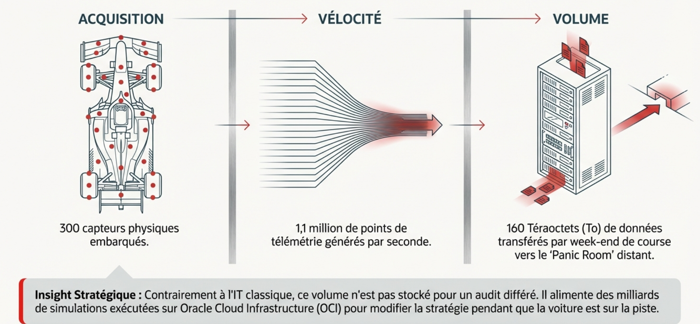

300+Capteurs par voiture
1.1MPoints / seconde
< 50msLatence critique
192Cœurs / CPU Ampere
1. L'Écosystème des Données et la Collecte
La performance en F1 repose sur une boucle de rétroaction ultra-rapide entre la voiture, le muret des stands et l'usine. Chaque composant est instrumenté pour fournir un état de santé en temps réel.
La chaîne d'acquisition : du capteur à l'ECU
Une monoplace est un réseau local mobile. Les capteurs (pression, température, contrainte, optique) génèrent des signaux analogiques convertis en numérique.
Focus Technique : Le Bus CAN (Controller Area Network)
Utilisé pour interconnecter les calculateurs sans ordinateur central. En F1, sa robustesse est capitale : il supporte des environnements à hautes interférences électromagnétiques et des vibrations extrêmes. Les données convergent vers l'ECU standardisé (fourni par McLaren Applied) qui sert de passerelle (gateway) vers les systèmes de télémétrie.

2. Cloud Computing et Architecture ARM
Le traitement des données ne se limite pas au bord de piste. L'avantage concurrentiel se gagne par la capacité à simuler des milliards de scénarios de course en quelques minutes.
Architecture ARM Ampere (A2/A4)
Les écuries comme Red Bull Racing ont migré leurs calculs CFD (mécanique des fluides) et stratégiques vers les instances OCI basées sur ARM.
- Parallélisation : Jusqu'à 192 cœurs par processeur pour traiter des simulations massives simultanément.
- Prédictibilité : Contrairement au x86, l'absence d'hyper-threading sur Ampere évite les variations de performance (jitter).
- Efficience : Réduction de la consommation d'énergie, cruciale pour respecter le plafonnement budgétaire (Budget Cap).
La "Panic Room" (Race Support Room)
Située à l'usine (ex: Milton Keynes pour Red Bull), cette salle reçoit les flux de télémétrie via des liaisons fibre transcontinentales avec une latence < 100ms.
- Analyses stratégiques secondaires.
- Comparaison en temps réel avec les données historiques (Big Data).
- Aide à la décision pour les ingénieurs de piste.
3. Transport de Données : Sans-fil et Très Haute Disponibilité
Le défi majeur est de maintenir une liaison stable avec un objet se déplaçant à plus de 320 km/h, entouré de structures métalliques et de milliers de spectateurs utilisant le Wi-Fi public.
Technologies de transmission circuit
802.11r (Fast BSS Transition) :
Pour couvrir un circuit de 5km, plusieurs bornes Wi-Fi sont nécessaires. Le protocole 802.11r permet à la voiture de "switcher" d'une borne à l'autre (handover) en moins de 50ms sans ré-authentification complète, évitant toute rupture du flux de télémétrie.
5G Privée et Network Slicing :
En utilisant une bande de fréquence dédiée, les écuries s'isolent du bruit numérique. Le Network Slicing permet de créer un tunnel logiciel prioritaire pour la télémétrie critique, garantissant que même si le réseau est saturé par la vidéo 4K, les données de sécurité moteur passent en priorité.
4. Menaces et Stratégies de Cybersécurité
La F1 est une cible de choix pour l'espionnage industriel. Un accès aux données de télémétrie d'un concurrent permet de comprendre l'usure de ses pneus, sa consommation de carburant et sa stratégie exacte.
Surface d'Attaque Étendue
Le "Paddock" est un environnement hostile :
- Mobilité : Montage/démontage hebdomadaire augmentant les risques d'erreurs de configuration (Misconfiguration).
- Interconnexion : Partenaires techniques (moteur, pneus) partageant des segments réseaux.
- Physique : Accès possible aux garages par des tiers.
Le Modèle Zero Trust
Adopté pour contrer les mouvements latéraux en cas d'intrusion :
- Micro-segmentation : Le réseau de télémétrie est strictement isolé du réseau bureautique de l'hospitalité.
- Authentification forte : Chaque capteur ou interface de diagnostic doit être identifié.
- SoC & SIEM : Analyse des journaux d'événements en temps réel pour détecter des comportements anormaux (ex: exfiltration de données).
5. IA Générative et Vision Agentique : L'horizon 2027
Le règlement 2027 va limiter l'usage de certains capteurs et appendices aérodynamiques. L'IA devient alors le seul moyen de "deviner" ce que l'on ne peut plus mesurer mécaniquement.
GenAI et RAG (Retrieval-Augmented Generation)
Lors d'un incident de course, les ingénieurs n'ont que quelques minutes pour décider de porter réclamation. L'IA générative, couplée à une base de données (RAG) contenant l'intégralité du règlement FIA et les jurisprudences des courses passées, permet de générer un argumentaire juridique solide instantanément.
Télémétrie Visuelle Agentique
Le concept : Utiliser les caméras haute définition comme des capteurs. En analysant les déformations visuelles de la carrosserie ou les vibrations des pneus à haute fréquence, l'IA détecte des anomalies (chatter) avant que les capteurs physiques (limités par le règlement) ne les voient. C'est une architecture hybride combinant calcul en périphérie (Edge) et modèles de vision par ordinateur.
6. Synthèse Technique
| Concept SISR |
Application F1 |
Objectif Métier |
| Haute Disponibilité |
Redondance des liaisons Fibre/Satellite |
Zéro perte de données en course |
| Segmentation |
VLANs isolés (Télémétrie vs Public) |
Protection contre les cyber-attaques |
| Edge Computing |
Racks Pure Storage compacts en bord de piste |
Traitement ultra-rapide sans latence Cloud |
| IA & Automatisation |
Scripts de détection d'anomalies (Fail-Silent) |
Sécurité du pilote et fiabilité moteur |